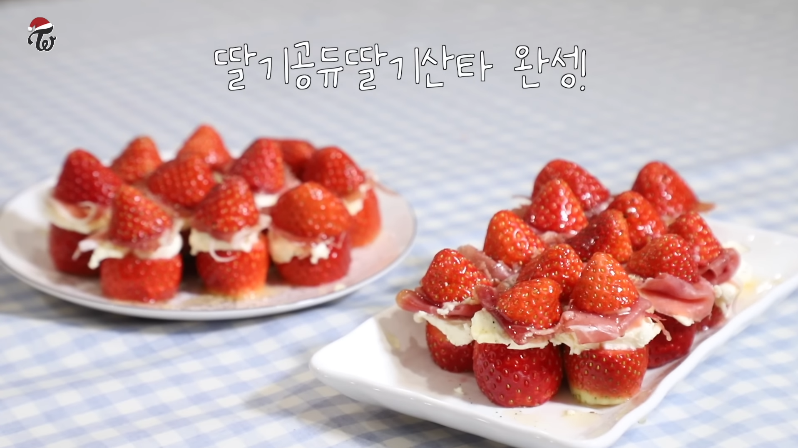

Twice Chaeyoung's Strawberry Santa

Description
Chaeyoung shared the Chaeyoung TV episode through her group's Youtube channel on December 30, 2021.
Giving a brief history, Chaeyoung recalled preparing the strawberry dish for her members.
She also shared a photo of the dish through Bubble, a paid subscription chat platform.
Through the replies, fans coined the term "strawberry santa" and Chaeyoung has used it as her dish's
name since then.
Ingredients
- 500g fresh Korean strawberries
- 500g mascarpone cheese
- 100g jamón Serrano
- Black pepper, crushed
- honey
Steps
- Wash the strawberries and pat dry. Cut the green leafy top off.
- Slice the strawberries in half, horizontally, about 1/3 from the bottom (the pointiest part of the strawberry).
Separate the top portions and the bottom halves in 2 different plates.
- Line the top halves facing up to prepare for filling. Scoop about a teaspoon chunk of mascarpone cheese
and place on the top half of the strawberry.
- Rip the jamon into small pieces, fold, and place on top of the mascarpone cheese.
- Place another layer of mascarpone cheese on top of the jamon.
- Now, it's time to complete the strawberry hat by placing the bottom tips on top of the second mascarpone cheese layer.
- Prepare the strawberry hats for final plating. Drizzle honey across the lined up strawberry hats and top off with crushed black pepper.
Back to Homepage